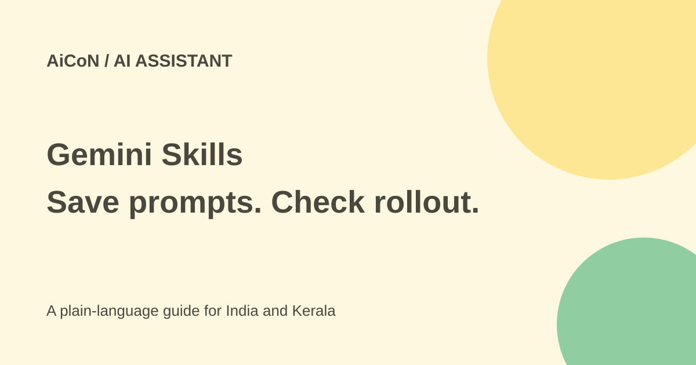

Gemini Skills: reusable prompts, access and Gems migration caveats
Gemini Skills save instructions so you can reuse them and combine them with other instructions. Google is expanding them beyond Spark, but its launch, help and Workspace schedule do not describe the same current access. Check what your account actually shows.

What does a skill do?
A skill is a saved set of instructions and reference material for a repeated task. You might keep a preferred writing style, a checklist for a report or a format for study notes. It gives Gemini context; it does not prove that the resulting facts or actions are correct.
Google describes invoking a skill by typing a forward slash and its name. You can combine skills, such as writing style and brand guidance. The launch says reference files can include text documents, PDFs and images. Some further file sources and sharing features are described as coming later.
Current access is not described consistently
The September 30 launch says Skills are rolling out directly in Gemini chat globally, for adults, with Workspace support in the coming weeks. Its footnote describes all Google AI subscription tiers.
The help page checked on October 7 still says Skills are currently only in Gemini Spark. It requires age 18 or over, a personal Google account and Google AI Pro or Ultra. It also lists country exclusions. India is not one of the listed exclusions, but that is not a hands-on confirmation of an Indian account.
The Workspace schedule says Gemini-app rollout begins October 13 and runs toward mid-November. These are different surfaces and rollout records. Do not assume a missing Skills button is a fault, or buy a plan based only on a global announcement.
How to try what is available
- Read the current help page and check your account type, age and subscription.
- Open Gemini and look for the actual Skills controls. If the supported route is Spark, follow the help page's Spark Skills page rather than guessing regular-chat controls.
- Describe a small instruction set or use the offered template. Choose a simple task with public or invented sample data.
- Read the saved instructions and reference files. Remove irrelevant permissions or content before enabling the skill.
- In a supported task, type / and choose the skill. Review the result against the source.
- When combining skills, check for contradictory instructions. A style rule should not override factual or privacy checks.
- Turn off an unused skill and review scheduled tasks separately. Saving instructions does not grant permission for an unwanted send, purchase or file change.
What happens to Gems?
The general launch says personal-account support starts ending in November, with automatic migration when Gems go away. It gives March 2027 for Workspace business, enterprise and nonprofit users, and June 2027 for education.
The Workspace-specific schedule is narrower: November 17 moves Gems into Settings while users can still create, edit and use them. It describes later removal no sooner than March 1, 2027 for business and enterprise, and June 1, 2027 for education. Remaining Gemini-app Gems become draft skills.
Do not treat November as a universal shutdown date. Keep a copy of important custom instructions and follow the notice for your own account. The Workspace post also says Gemini-app skills do not automatically appear inside Workspace apps.
Free or paid?
The current Spark help requires Pro or Ultra; it does not establish free Skills access. The wider launch uses different subscription wording. No Indian price or exact quota was verified here. Check the actual supported feature and local plan screen before paying.
Privacy and reliable use
A saved prompt can include private files or instructions to use connected services. Add only material you are allowed to share with the chosen product. Avoid account secrets, private class lists and confidential client examples.
Gemini can choose a relevant enabled skill automatically in Spark, according to help. Review important output and actions. A skill that runs repeatedly can repeat a bad assumption just as consistently as a good format.
What changed since the original post?
The original slash-prompt and stacking description is supported, but current access and migration wording need these caveats. This guide preserves the official-page differences rather than silently picking one. No subscription was purchased, account inspected or Gem migrated.
Frequently asked questions
Are Skills free for everyone?
That is not established. The current Spark help requires a paid supported plan.
Do all Gems stop in November?
No universal shutdown is supported. Account type and rollout notices matter.
Can I stack skills?
Google describes that capability in supported surfaces. Check the resulting instructions and output.
Sources: Google launch announcement · Current Skills help · Official Workspace rollout schedule. Checked 7 October 2026.